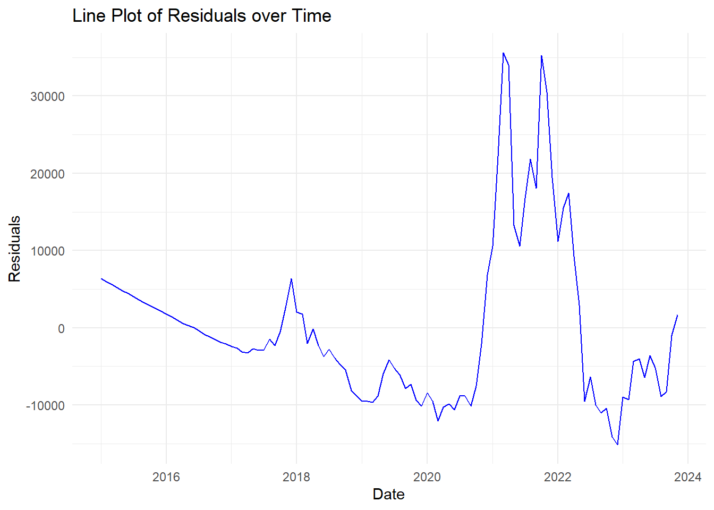

Chapter 3 Regression Analysis
3.0.1 Linear Regression
- Create a linear model of the time series dataset.
- Show the summary of the model and explain the outcome.
- Create a plot of the linear model on top of the time series dataset line plot with scatter data points.
- Perform residual analysis and create a line & scatter plot of the residuals. Explain the outcome.
- Create a histogram plot of the residuals. Explain the outcome.
- Create ACF & PACF plots of residuals. Explain the outcome.
- Create QQ plot of residuals. Explain the outcome.
- Perform Shapiro-Wilk test on residuals. Explain the outcome.
- Explain if linear model is appropriate or not.
3.0.1.1 Create a linear model of the time series dataset.
# Convert Date to numeric format for linear modeling
BitCoin_df <- BitCoin_df %>%
mutate(Date_numeric = as.numeric(Date))
# Fit the linear model
linear_model <- lm(Close ~ Date_numeric, data = BitCoin_df)
#y=mx+c
#close price = m*numeric date + cCode explanation here The linear model predicts Bitcoin’s closing price based on the date. The slope shows the price change rate over time, and the intercept represents the initial price at the start date.
3.0.1.2 Show the summary of the model and explain the outcome.
##
## Call:
## lm(formula = Close ~ Date_numeric, data = BitCoin_df)
##
## Residuals:
## Min 1Q Median 3Q Max
## -15114 -7997 -2255 3065 35626
##
## Coefficients:
## Estimate Std. Error t value Pr(>|t|)
## (Intercept) -2.211e+05 1.939e+04 -11.40 <2e-16 ***
## Date_numeric 1.308e+01 1.073e+00 12.19 <2e-16 ***
## ---
## Signif. codes: 0 '***' 0.001 '**' 0.01 '*' 0.05 '.' 0.1 ' ' 1
##
## Residual standard error: 10430 on 105 degrees of freedom
## Multiple R-squared: 0.586, Adjusted R-squared: 0.5821
## F-statistic: 148.6 on 1 and 105 DF, p-value: < 2.2e-16# Create a new column with fitted values
BitCoin_df <- BitCoin_df %>%
mutate(Fitted_Close = predict(linear_model))
# Plot the original data and the linear model
ggplot(BitCoin_df, aes(x = Date)) +
geom_point(aes(y = Close, color = "Original Data")) + # Original data points
geom_line(aes(y = Fitted_Close, color = "Fitted Line")) + # Fitted line
labs(title = "Linear Model of Bitcoin Prices Over Time",
x = "Date",
y = "Close Price",
color = "Legend") + # Add a label to the legend
theme_minimal() +
scale_color_manual(values = c("Original Data" = "blue", "Fitted Line" = "red")) # Specify colors
Code explanation here
The provided graph and summary show a linear regression model of Bitcoin prices over time. The blue points represent the original data, while the red line represents the fitted linear model. The coefficients table and statistical measures indicate a significant relationship between time and Bitcoin prices, with an R-squared value of 0.586, suggesting that approximately 58.6% of the variance in Bitcoin prices can be explained by the model. The residuals indicate some variability around the fitted line.
3.0.1.3 Create a plot of the linear model on top of the time series dataset line plot with scatter data points.
#Create a plot of the linear model on top of the time series dataset line plot with scatter data points.
#Plot the original data, the time series line, and the linear model
ggplot(BitCoin_df, aes(x = Date)) +
geom_point(aes(y = Close), color = "blue") + # Original data points
geom_line(aes(y = Close), color = "blue", linetype = "dashed") + # Time series line
geom_line(aes(y = Fitted_Close), color = "red") + # Fitted linear model line
labs(title = "Time Series of Bitcoin Prices with Linear Model",
x = "Date",
y = "Close Price") +
theme_minimal() Code explanation here The graph shows Bitcoin prices over time with blue dots representing the original data points and a blue dashed line representing the time series trend. The red line indicates the fitted linear model. The linear model captures the general upward trend but misses some of the more volatile fluctuations in Bitcoin prices.
3.0.1.4 Perform residual analysis
# Convert Date to numeric format for linear modeling
BitCoin_df <- BitCoin_df %>%
mutate(Date_numeric = as.numeric(Date))
# Fit the linear model
linear_model <- lm(Close ~ Date_numeric, data = BitCoin_df)
#y=mx+c
#close price = m*numeric date + c
summary(linear_model)##
## Call:
## lm(formula = Close ~ Date_numeric, data = BitCoin_df)
##
## Residuals:
## Min 1Q Median 3Q Max
## -15114 -7997 -2255 3065 35626
##
## Coefficients:
## Estimate Std. Error t value Pr(>|t|)
## (Intercept) -2.211e+05 1.939e+04 -11.40 <2e-16 ***
## Date_numeric 1.308e+01 1.073e+00 12.19 <2e-16 ***
## ---
## Signif. codes: 0 '***' 0.001 '**' 0.01 '*' 0.05 '.' 0.1 ' ' 1
##
## Residual standard error: 10430 on 105 degrees of freedom
## Multiple R-squared: 0.586, Adjusted R-squared: 0.5821
## F-statistic: 148.6 on 1 and 105 DF, p-value: < 2.2e-16#Calculate residuals
BitCoin_df <- BitCoin_df %>%
mutate(Residuals = Close - Fitted_Close)
#residual calcultion in different way
#res_dual_values <- residuals(linear_model)
#summary(res_dual_values)
# Print the first few rows to verify
head(BitCoin_df)## Date Close month year Date_numeric Fitted_Close Residuals
## 1 2015-01-01 217.464 01 2015 16436 -6142.536 6360.000
## 2 2015-02-01 254.263 02 2015 16467 -5737.165 5991.428
## 3 2015-03-01 244.224 03 2015 16495 -5371.023 5615.247
## 4 2015-04-01 236.145 04 2015 16526 -4965.652 5201.797
## 5 2015-05-01 230.190 05 2015 16556 -4573.357 4803.547
## 6 2015-06-01 263.072 06 2015 16587 -4167.986 4431.058Code explanation here
The code snippet converts dates in the Bitcoin dataset to numeric format for linear modeling. A linear model is then fitted to predict the closing price based on the numeric date. The model’s summary shows a significant positive relationship between date and closing price, with an R-squared value of 0.586, indicating moderate explanatory power. Residuals are calculated to assess model fit. The dataset includes date, closing price, month, year, numeric date, fitted close values, and residuals for verification.
3.0.1.5 Perform residual analysis and create a line & scatter plot of the
# Plot the residuals: Line plot
ggplot(BitCoin_df, aes(x = Date, y = Residuals)) +
geom_line(color = "blue") +
labs(title = "Line Plot of Residuals over Time",
x = "Date",
y = "Residuals") +
theme_minimal()
Code explanation here The graph shows a blue line plotting the difference between actual values and predicted values for a Bitcoin data set, over time. Basically, it shows how much the actual Bitcoin values differed from what a model predicted on certain dates.
3.0.1.6 Residual analysis scatter plot
# Plot the residuals: Scatter plot
ggplot(BitCoin_df, aes(x = Fitted_Close, y = Residuals)) +
geom_point(color = "blue") +
geom_hline(yintercept = 0, linetype = "dashed", color = "red") +
labs(title = "Scatter Plot of Residuals",
x = "Fitted Close Price",
y = "Residuals") +
theme_minimal()
Code explanation here
This graph shows blue dots representing the difference between actual Bitcoin closing prices and what a model predicted. The horizontal red line represents perfect predictions (no difference). Scattered points around the line indicate the model’s accuracy - ideally, the dots would be random with no clear pattern.
3.0.1.7 Summary of Residual analysis
## Min. 1st Qu. Median Mean 3rd Qu. Max.
## -15114 -7997 -2255 0 3065 35626Code explanation here
The summary statistics of the residuals provide insight into the accuracy of the linear model’s predictions for Bitcoin closing prices. The residuals range from -15,114 to 35,626, indicating the model sometimes significantly underestimates or overestimates the actual prices. The median residual of -2,255 suggests that half of the predictions are off by less than this amount. The mean residual is 0, indicating that, on average, the model’s predictions are unbiased. The first and third quartiles (-7,997 and 3,065) show that 50% of the residuals fall within this range, highlighting the variability in prediction accuracy.
3.0.1.8 Create a histogram plot of the residuals. Explain the outcome.
#Create a histogram plot of the residuals. Explain the outcome.
# Plot the histogram of residuals
ggplot(BitCoin_df, aes(x = Residuals)) +
geom_histogram(binwidth = 500, color = "black", fill = "blue", alpha = 0.7) +
labs(title = "Histogram of Residuals",
x = "Residuals",
y = "Frequency") +
theme_minimal()
Code explanation here
The graph shows a bar chart of prediction errors (residuals) for Bitcoin prices. Each bar represents how many errors fell within a specific price range. The center area, with more bars, suggests most predictions were close. Ideally, the bars would be symmetrical around zero (no errors), but some errors exist on both positive and negative sides.
3.0.1.9 Create a histogram plot of the residuals with
# Overlay a normal distribution curve on the histogram
ggplot(BitCoin_df, aes(x = Residuals)) +
geom_histogram(aes(y = ..density..), binwidth = 500, color = "black", fill = "blue", alpha = 0.7) +
stat_function(fun = dnorm, args = list(mean = mean(BitCoin_df$Residuals), sd = sd(BitCoin_df$Residuals)), color = "red", size = 1) +
labs(title = "Histogram of Residuals with Normal Curve",
x = "Residuals",
y = "Density") +
theme_minimal()## Warning: Using `size` aesthetic for lines was
## deprecated in ggplot2 3.4.0.
## ℹ Please use `linewidth` instead.
## This warning is displayed once every
## 8 hours.
## Call
## `lifecycle::last_lifecycle_warnings()`
## to see where this warning was
## generated.## Warning: The dot-dot notation (`..density..`)
## was deprecated in ggplot2 3.4.0.
## ℹ Please use `after_stat(density)`
## instead.
## This warning is displayed once every
## 8 hours.
## Call
## `lifecycle::last_lifecycle_warnings()`
## to see where this warning was
## generated.code explanation here
This graph shows a histogram of prediction errors (residuals) for Bitcoin prices with a normal distribution curve overlaid in red. The bars represent the frequency of errors in different price ranges. Ideally, the bars would closely match the smooth red curve, indicating the errors follow a normal distribution. By comparing their shapes, we can assess how close the actual errors are to being normally distributed.
3.0.1.10 Create ACF & PACF plots of residuals.Explain the outcome.
Code explanation here
ACF measures the correlation between residuals at different lags. Most bars falling within significance bounds (dashed lines) indicate no significant autocorrelation, suggesting the model captures data patterns adequately.
PACF measures the correlation between residuals and lagged values, accounting for shorter lags. Bars within significance bounds indicate no significant partial autocorrelation, meaning past values don’t provide additional predictive information. Both plots help determine if residuals are random (white noise), validating the model. Most lags within bounds suggest errors are random and uncorrelated, indicating a good model fit.
3.0.1.11 Create QQ plot of residuals. Explain the outcome.
Code explanation here
The graph shows a QQ plot of prediction errors (residuals). It compares these errors to a perfect normal distribution (red line). Ideally, the points would fall on the red line, indicating normally distributed errors. In this plot, the points veer away from the line, especially at the edges. This suggests the errors may not be normally distributed.
3.0.1.12 Perform Shapiro-Wilk test on residuals. Explain the outcome.
#Perform Shapiro-Wilk test on residuals. Explain the outcome.
# Perform Shapiro-Wilk test on residuals
shapiro_test <- shapiro.test(BitCoin_df$Residuals)
# Print the result of the Shapiro-Wilk test
print(shapiro_test)##
## Shapiro-Wilk normality test
##
## data: BitCoin_df$Residuals
## W = 0.85983, p-value = 1.215e-08Code explanation here
The Shapiro-Wilk test assesses the normality of residuals. The test statistic 𝑊 W is 0.85983, and the p-value is 1.215e-08, which is much less than 0.05. This indicates that the residuals are not normally distributed,
3.0.1.13 Explain if linear model is appropriate or not.
Code explanation here
The linear model may not be appropriate because the Shapiro-Wilk test reveals non-normal residuals (p-value = 1.215e-08). Non-normality violates a key assumption of linear regression, potentially leading to unreliable estimates and inferences. This indicates that the model may not capture the data’s underlying patterns accurately.
3.0.2 Quadratic Regression
- Create a quadratic model of the time series dataset.
- Show the summary of the model and explain the outcome.
- Explain if quadratic model is appropriate or not.
3.0.2.1 Create a quadratic model of the time series dataset
# Create the quadratic term for the date
BitCoin_df <- BitCoin_df %>%
mutate(Date_numeric = as.numeric(Date),
Date_numeric2 = Date_numeric^2)
view(BitCoin_df)
# Fit the quadratic model
quadratic_model <- lm(Close ~ Date_numeric + Date_numeric2, data = BitCoin_df)Code explanation here
The dataset is enhanced by adding a squared numeric date column to capture non-linear trends. A quadratic regression model is then fitted with closing price as the dependent variable and both the numeric date and its square as independent variables. This model aims to better capture the relationship between time and Bitcoin closing prices by accounting for potential quadratic effects.
3.0.2.2 Show the summary of the model and explain the outcome.
##
## Call:
## lm(formula = Close ~ Date_numeric + Date_numeric2, data = BitCoin_df)
##
## Residuals:
## Min 1Q Median 3Q Max
## -15872 -7420 -1996 2666 36106
##
## Coefficients:
## Estimate Std. Error t value Pr(>|t|)
## (Intercept) 1.066e+05 4.157e+05 0.256 0.798
## Date_numeric -2.333e+01 4.615e+01 -0.506 0.614
## Date_numeric2 1.009e-03 1.278e-03 0.789 0.432
##
## Residual standard error: 10450 on 104 degrees of freedom
## Multiple R-squared: 0.5885, Adjusted R-squared: 0.5806
## F-statistic: 74.36 on 2 and 104 DF, p-value: < 2.2e-16Code explanation here
The summary of the quadratic regression model shows that the relationship between Bitcoin’s closing price and the date (both linear and squared) is analyzed. The residuals indicate the spread of prediction errors. The coefficients for the intercept, Date_numeric, and Date_numeric2 are not statistically significant (p-values > 0.05), means weak relationships. Despite this, the model explains about 58.85% of the variance in closing prices (R-squared = 0.5885). The F-statistic (74.36) and its p-value (< 2.2e-16) indicate the overall model is significant.
3.0.2.3 Explain if quadratic model is appropriate or not.
# Create a new column with the fitted values from the quadratic model
BitCoin_df <- BitCoin_df %>%
mutate(Fitted_Close_Quadratic = predict(quadratic_model))
# Plot the original data, the linear model, and the quadratic model
ggplot(BitCoin_df, aes(x = Date)) +
geom_point(aes(y = Close), color = "blue") + # Original data points
geom_line(aes(y = Fitted_Close), color = "red", linetype = "dashed") + # Fitted linear model line
geom_line(aes(y = Fitted_Close_Quadratic), color = "green") + # Fitted quadratic model line
labs(title = "Time Series of Bitcoin Prices with Linear and Quadratic Models",
x = "Date",
y = "Close Price") +
theme_minimal()
## Min. 1st Qu. Median Mean 3rd Qu. Max.
## -4411 4156 14045 14944 25262 37777Code explanation here
The code creates a new column for predicted closing prices based on a quadratic model in the BitCoin_df data frame. The plotted lines show the original data (blue dots), the fitted linear model (red dashed), and the quadratic model (green). The quadratic curve better reflects the data’s trend, suggesting an accelerating increase in closing prices over time.